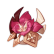
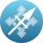
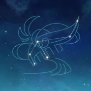

Una discipula de los Adeptus con una mirada perdida. Al haber vivido recluida en as montañas de Liyue, su cararcter es tan frio y distante como el de los Adeptus.
Artefacto/s recomendados

Atq% / Energia%

Atq%
Atq%
Energia% > prob critica > Atq%
Talentos
Pasivas
Constelación
Armas Recomendadas


Personajes compatibles